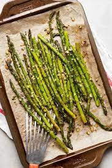

Roasted Asparagus

Fresh asparagus spears are simply seasoned with garlic, topped with shredded Parmesan cheese, and baked until tender and sweet in this easy spring side dish.
Ingredients
- olive oil cooking spray
- 1 lb fresh asparagus, tough ends trimmed
- ¼ cup shredded Parmesan cheese
- 1 teaspoon sea salt
- ¼ teaspoon garlic powder, or to taste
Steps
- Preheat oven to 400 degrees F (200 degrees C).
- Spray the inside of a 9x13 casserole dish with olive oil cooking spray. Place asparagus in the dish and lightly spray spears with cooking spray.
- Sprinkle asparagus with Parmesan cheese, sea salt, and garlic powder.
- Roast in preheated oven until fork easily punctures thickest part of stem, about 12 minutes.
Tips
The best way to keep fresh asparagus for a long while in the refrigerator is to slice off the stems and then stand them in a bowl with a couple of inches of water in the bottom. It keeps for a very long time this way. Add water as necessary.